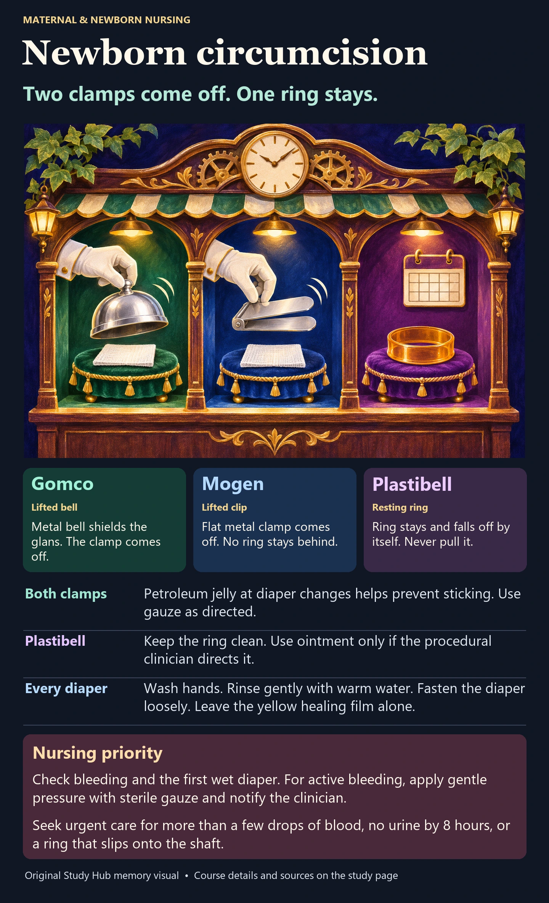
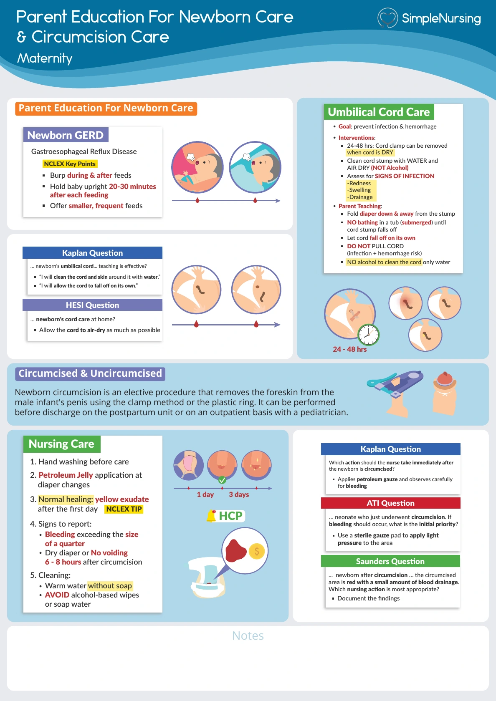

Gomco clamp
Lifted bell. A metal bell shields the glans (the head of the penis). The clinician removes the bell and clamp when the procedure ends.
Diaper care. Apply petroleum jelly as directed to prevent sticking. Use petroleum gauze if ordered.
NUR 234 · Newborn care and discharge teaching
Gomco and Mogen clamps come off at the end of the procedure. A Plastibell ring stays on. Knowing which device was used tells you what to teach at the next diaper change.

Lifted bell. A metal bell shields the glans (the head of the penis). The clinician removes the bell and clamp when the procedure ends.
Diaper care. Apply petroleum jelly as directed to prevent sticking. Use petroleum gauze if ordered.
Lifted clip. A flat metal clamp holds the foreskin. When the clinician removes it, no device remains.
Diaper care. Follow the same petroleum jelly and dressing instructions as for Gomco.
Resting ring. A ligature holds the foreskin against a plastic ring. The ring separates on its own. Never pull or twist it.
Diaper care. The course teaches warm-water care without petroleum jelly while the ring is on. At home, follow the procedural clinician’s instructions about ointment.
Verify parental consent, vitamin K administration, prior void per nursery policy and the pain-control plan. Local anesthetic treats procedural pain. Swaddling and sucrose provide additional comfort.
Suspected hypospadias? Defer circumcision and notify the clinician. The foreskin may be needed for repair. Review hypospadias
Active bleeding: Apply gentle direct pressure with sterile gauze and notify the clinician. More than a few drops or persistent bleeding needs urgent assessment. Heavy blood loss with pallor, cold skin or weakness is an emergency. Call emergency services.
Seek urgent care for no urine by 8 hours, a ring slipping onto the shaft, a dark blue or black glans, marked swelling, spreading redness, pus, or a newborn rectal temperature of 100.4°F (38°C) or higher.
Parent Education for Newborn Care & Circumcision Care. The handout’s petroleum-gauze teaching applies to clamp care in this course. For a Plastibell, use the ring instructions above. Its coin-sized bleeding example is an exam cue. Clinically, seek help for ongoing bleeding or more than a few drops.
